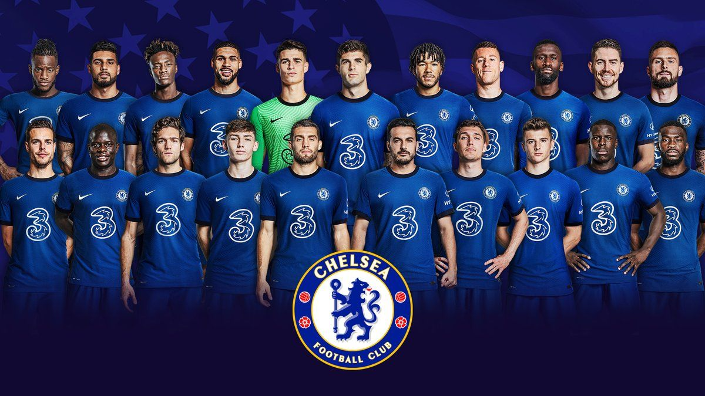

«Че́лсі» — професійний англійський футбольний клуб із західного Лондона. З 1905 року, виступає в англійській Прем'єр-лізі та провів більшу частину своєї історії у вищому дивізіоні англійського футболу. Один з клубів-засновників англійської Прем'єр-ліги 1992 року.[6] «Челсі» шість разів ставав чемпіоном Англії, вісім разів вигравав Кубок Англії та п'ять разів Кубок Футбольної ліги. Також клуб досяг успіху на європейській арені, виграв двічі Лігу чемпіонів, Кубок володарів кубків УЄФА, Лігу Європи УЄФА та Суперкубок УЄФА. Є одним з п'ятьох команд, які виграли усі клубні турніри УЄФА, а також першими серед англійських клубів. Першими з лондонських клубів виграли Лігу чемпіонів УЄФА.
Попри те, що в перші 50 років значних успіхів майже не було, клубу судилося дожити до славних часів з тієї миті коли одного разу осіннім недільним ранком 1904 року Генрі Огастес Мірс змінив свою думку. З усіх рішень, які вплинули на історію «Челсі», немає важливішого, ніж те, яке цей бізнесмен початку століття прийняв саме того дня. Генрі Мірс був ентузіастом того виду спорту, який підкорив усю північ Британії, проте поки що не був так само популярний у столиці. На зламі століть Лондон не міг виставити жодної команди в Перший дивізіон футбольної ліги. Мірс знайшов відповідне для виступів футбольного клубу місце на території старого атлетичного комплексу в районі Стемфорд Бридж — вільна ділянка землі в західному Лондоні. Це було місце, яке він планував повністю переобладнати. Проте виникли непередбачені складнощі, а також вигідні пропозиції про придбання ділянки. Мірс був уже готовий продати землю і відмовитися від своєї спортивної мрії. Його товариш Фредерік Паркер, захоплений проєктом футбольного стадіону, спробував переконати його, проте одного доленосного недільного ранку Мірс сказав Паркеру, що він просто марнує час. Під час спільної прогулянки собака Мірса несподівано вкусив Паркера, викликавши в того кровотечу і сильний біль, проте потерпілого ця подія лише потішила. «Ти з біса добре переніс цей укус», — заявив Мірс, а потім запевнив свого товариша в тому, що відтепер довірятиме його судженням про інших. «Зустрінемося тут завтра о дев'ятій ранку і займемося ділом», — сказав він. Стемфорд Бридж знову ожив. Проте спочатку замислювався зовсім не такий ФК «Челсі». Здавалося, що найкращий спортивний стадіон у Лондоні був недоречним на краю багатого Челсі, проте, як показала історія, Мірс зробив правильний вибір. Близькість до центру міста зробила це місце ідеальним для футболу. Всупереч історії багатьох клубів Мірс вирішив створити команду для стадіону, а не навпаки. 10 березня 1905 року в пабі під назвою «Ніж м'ясника» відбулося засідання. Одним з питань, що стояли на порядку денному, було питання про назву нового клубу. Варіанти «Стемфорд Бридж», «Кенсінгтон» і ФК «Лондон» було відкинуто. «Челсі» — ця назва була те, що треба, і тут почалася історія.
Стадіон футбольного клубу «Челсі» називається «Стемфорд Бридж». Офіційне відкриття стадіону «Стемфорд Бридж» 28 квітня відбулося 1877 року. Автором проєкту споруди є відомий архітектор Арчибальд Лейтч, той самий, який створив «Гудісон Парк», «Олд Траффорд» і ряд інших стадіонів. «Стемфорд Бридж» був побудований на місці стадіону «Лілль Бридж», відомого тим, що на ньому відбувся в 1873 році фінальний поєдинок Кубка Англії. Спочатку свого існування на «Стемфорд Бридж» була всього одна східна трибуна довжиною в 120 ярдів. Прийняти арена могла 5000 уболівальників. Решта трибуни були відкриті тільки після проведення значних будівельно-ремонтних робіт. На 2021 рік стадіон займає одинадцятий рядок у рейтингу найбільш містких стадіонів Великої Британії (вміщує 41 841 особа), по рейтингу УЄФА має 4 зірки. Спочатку стадіон був запропонований футбольному клубу «Фулгем», але вони відмовилися від цієї пропозиції. В результаті у 1905 році на «Стемфорд Бридж» влаштувалася новостворена команда «Челсі». Протягом 25 років стадіон практично не реконструювався. Лише в 1930 році був побудований навіс над Південною Трибуною («Шед Енд»). Саме під цим навісом юрмилися найбільш віддані фани команди «Челсі». Коли в кінці 70-х років клуб збанкрутував, власники прийняли рішення продати «Стемфорд Бридж» будівельній компанії для того, щоб розплатитися з боргами, але подальша важка боротьба за повернення стадіону увінчалася успіхом в 1992 році. Тренувальна база «Челсі» знаходиться в Кобгемі, графство Суррей. «Челсі» переїхав в Кобгем у 2004 році. Попередня база знаходилася в Гарлінгтоні, яка з 2005 року належить «Квінз Парк Рейнджерс».
Samsung став титульним спонсором «Челсі» 1 червня 2005 року, уклавши п'ятирічний контракт. Угода була підписана на стадіоні команди «Стемфорд Бридж» президентом європейського підрозділу Samsung Ін Су Кімом і виконавчим директором футбольного клубу Пітером Кеньоном. Ця спонсорська угода стала найбільшою в історії «Челсі». «Сині» підписали п'ятирічну угоду з виробником покришок для машин Yokohama. Згідно з угодою команда зі столиці Англії отримає протягом всього терміну його дії 200 мільйонів фунтів, тобто кожен сезон «Челсі» буде отримувати по 40 мільйонів фунтів. Поточним головним спонсором клубу, логотип якого зображений на футболці, є компанія «3».